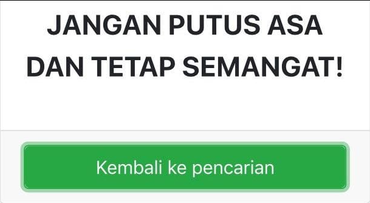

Tambah Usia
Tahun ini aku sedang tidak ingin meminta lebih. Hanya ingin berterimakasih saja untuk apapun. Atas
kelahiran, ulang tahun, kekuatan, kebahagiaan dan cinta. Terimakasih telah memberiku kesempatan untuk hidup
sedikit lebih lama.
Kegagalan Di 2022

Seperti petunjuk lain yang kita lewati saat mobil berjalan.
Saya tak percaya dengan peribahasa yang mengatakan “kegagalan adalah kesuksesan yang tertunda”. Itu peribahasa
lebay menurut saya. Bisa menjebak orang untuk lambat move on.
Semua adalah siklus yang sama. Kita perlu mempelajari tiap langkahnya. Kadang kegagalan adalah tamparan
terkeras yang diberikan alam untuk memperingatkan bahwa kita perlu berpindah fokus atau merubah cara dalam
menjalani kehidupan.
Santai saja.
Karena tak banyak pilihan dalam hidup kecuali menjalaninya. Tanpa keluhan tentunya.
kegagalan adalah awal dari kesuksesan " enggak , kegagalan ya kegagalan ,dalam hidup ini ya kita selalu
ketemu ama gagalan , kegagalan ketolak sbm bukan kegagalan terakhir , masih banyak kegagalan2 menunggu didepan
nanti , jadi semangattt ,udah disimpan dulu quotesnya ambil tisu
Awal yang baru
satu-satunya cara menemukan apa yang harus kita lakukan, siapa kita adalah dengan mengaktifkan gaya hidup kita, sebab hanya gaya hidup yang sebenarnya mampu memandu kita saat kita tersesat.
Manifesting masa depan.Agar goals tidak terlihat mustahil dan begitu sulit, mungkin kamu perlu menaruh rumus SMART ini untuk membuatnya lebih ‘jelas’.
Apapun yg telah terjadi di 2022 ini, aku harap kita nggak merasa membuang waktu,
dan apa yg kita rasa "kok gini yah?!" "harusnya aku memilih A dripd B!" , mungkin memang keputusan terbaik yg bisa kita lakukan pada saat itu